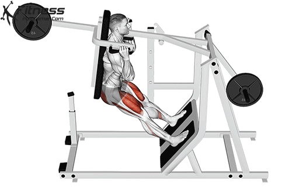

Pendulum Squat
Step:1 Step onto the machine by using the platform and placing your back on the pad
Step:2 Ensure that the pads lay right on your shoulder (if not adjust the height as needed)
Step:3 Place feet in a narrow position
Step:4 Bend your knees as to allow activation of the quads
Step:5 Perform the squat and ensure quad activation throughout the movement
Front Squat
Step:1 Place the bar at shoulder height
Step:2 Walk into the bar placing it on gap created by your shoulders
Step:3 Cross your arms to stabilize the bar placement
Step:4 Using your legs lift off the rack with the bar and take two steps back
Step:5 Perform a squat slow and controlled
Leg Extension

Step:1 Place seat to a proper position where yor knee when seated hangs over the seat
Step:2 Place the pad on as tight as possible to your quads (this is to stabilize the body)
Step:3 Kick out with both legs to the sky this will activate your quadriceps
Step:4 Return to the starting position as slow as possible
Bulgarian Split Squat

Step:1 Take a seat on the edge of the bench and stretch out your feet
Step:2 Place foot on the floor then keep that foot still while you use the other to stabilize your body on the bench
Step:3 Squat with the main focus being on the leg under you and utilizing the leg in the back only for stabilizing
Step:4 Repeat the same process when switching legs